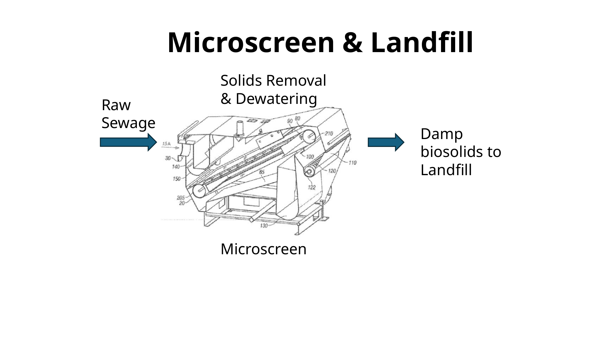

FECR Knowledge Base
Recover carbon early. Simplify treatment. Create value.
Front End Carbon Recovery is a practical, modular strategy for improving wastewater treatment by removing carbon-rich solids near the headworks before they burden downstream processes.
Is your plant struggling?
Many plants experience symptoms of solids loading before anyone can point to a single design-limit number.
Start with the problem →How does FECR work?
Microscreen, dewater, dry, pyrolyze. Each step provides value and prepares for the next.
See the process →Can it be phased?
FECR does not have to be an all-or-nothing project. Utilities can start with the stage they need now.
View implementation stages →The core idea: The best sludge is the sludge you never create. Recover solids before they become biological sludge, and every downstream process has less work to do.
What this prototype demonstrates
This first version is designed as a website experience, not a report. It uses short pages, clear transitions, and visual entry points so plant managers, engineers, and decision-makers can explore at different depths.

Draft process graphic from the microscreen presentation. This will be redrawn as a clean website graphic.